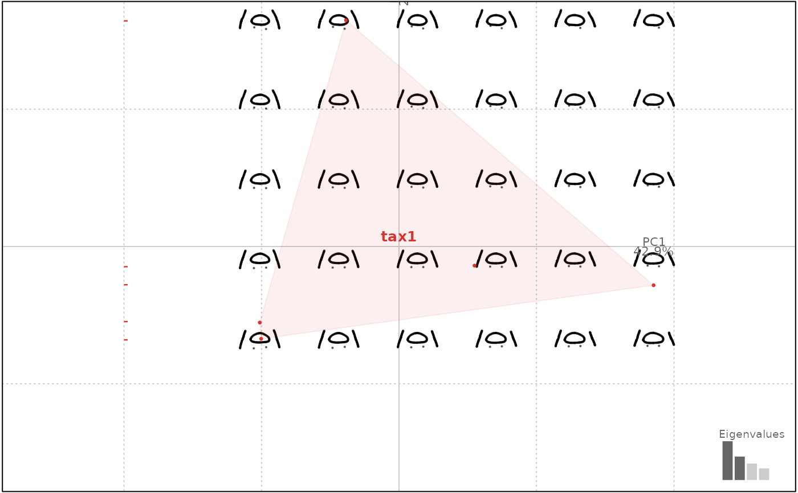

Full Generalized Procrustes alignment between shapes with sliding landmarks
Source:R/core-ldk-procrustes.R
fgsProcrustes.RdDirectly wrapped around geomorph::gpagen.
Note
Landmarks methods are the less tested in Momocs. Keep in mind that some features are still experimental and that your help is welcome.
See also
Other procrustes functions:
fProcrustes(),
fgProcrustes(),
pProcrustes()
Examples
ch <- chaff %>% slice(1:5) # for the sake of speed
chaffp <- fgsProcrustes(ch)
#>
#> Performing GPA
#>
|
| | 0%
|
|======= | 10%
#> Singular BE matrix; using generalized inverse
|
|============== | 20%
#> Singular BE matrix; using generalized inverse
|
|===================== | 30%
#> Singular BE matrix; using generalized inverse
|
|============================ | 40%
#> Singular BE matrix; using generalized inverse
|
|=================================== | 50%
#> Singular BE matrix; using generalized inverse
|
|========================================== | 60%
#> Singular BE matrix; using generalized inverse
|
|================================================= | 70%
#> Singular BE matrix; using generalized inverse
|
|======================================================== | 80%
#> Singular BE matrix; using generalized inverse
|
|=============================================================== | 90%
#> Singular BE matrix; using generalized inverse
|
|======================================================================| 100%
#>
#> Making projections... Finished!
chaffp
#> An LdkCoe [full Generalized Procrustes] object with:
#> --------------------
#> - $coo: 5 configuration of landmarks (172 +/- 0 coordinates)
#> # A tibble: 5 × 3
#> id taxa centsize
#> <fct> <fct> <dbl>
#> 1 571 tax1 1343.
#> 2 572 tax1 1279.
#> 3 573 tax1 1232.
#> 4 581 tax1 1296.
#> 5 582 tax1 1274.
chaffp %>% PCA() %>% plot("taxa")
#> will be deprecated soon, see ?plot_PCA
